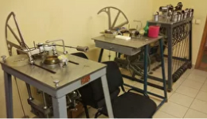
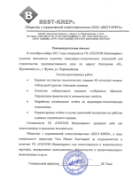

Весь комплекс
Геодезических, Геологических и Экологических изысканий
16 инженеров в штате
Лицензии СРО
Работаем с 2007 года
Наши услуги
Геодезическое сопровождение строительства
Геодезическое сопровождение строительства начинается на этапе создания проекта сооружения. Проводятся геолого-геодезические исследования территории, выполняется бурение и отбор проб грунта и грунтовых вод для лабораторного анализа.
Важнейшая задача геодезического сопровождения – создать на будущей стройплощадке геодезическую сеть. Жора такая геодезическая основа позволит закрепить на участке единую систему координат объекта, а значит – обеспечить геометрическое соответствие возводящегося здания проектной документации.
Геодезическое сопровождение строительства
Геодезическое сопровождение строительства начинается на этапе создания проекта сооружения. Проводятся геолого-геодезические исследования территории, выполняется бурение и отбор проб грунта и грунтовых вод для лабораторного анализа.
Важнейшая задача геодезического сопровождения – создать на будущей стройплощадке геодезическую сеть. Жора такая геодезическая основа позволит закрепить на участке единую систему координат объекта, а значит – обеспечить геометрическое соответствие возводящегося здания проектной документации.
Геодезическое сопровождение строительства
Геодезическое сопровождение строительства начинается на этапе создания проекта сооружения. Проводятся геолого-геодезические исследования территории, выполняется бурение и отбор проб грунта и грунтовых вод для лабораторного анализа.
Важнейшая задача геодезического сопровождения – создать на будущей стройплощадке геодезическую сеть. Жора такая геодезическая основа позволит закрепить на участке единую систему координат объекта, а значит – обеспечить геометрическое соответствие возводящегося здания проектной документации.
ABOBAS
Геодезическое сопровождение строительства начинается на этапе создания проекта сооружения. Проводятся геолого-геодезические исследования территории, выполняется бурение и отбор проб грунта и грунтовых вод для лабораторного анализа.
Важнейшая задача геодезического сопровождения – создать на будущей стройплощадке геодезическую сеть. Жора такая геодезическая основа позволит закрепить на участке единую систему координат объекта, а значит – обеспечить геометрическое соответствие возводящегося здания проектной документации.
Геодезическое сопровождение строительства
Геодезическое сопровождение строительства начинается на этапе создания проекта сооружения. Проводятся геолого-геодезические исследования территории, выполняется бурение и отбор проб грунта и грунтовых вод для лабораторного анализа.
Важнейшая задача геодезического сопровождения – создать на будущей стройплощадке геодезическую сеть. Жора такая геодезическая основа позволит закрепить на участке единую систему координат объекта, а значит – обеспечить геометрическое соответствие возводящегося здания проектной документации.
Геодезическое сопровождение строительства
Геодезическое сопровождение строительства начинается на этапе создания проекта сооружения. Проводятся геолого-геодезические исследования территории, выполняется бурение и отбор проб грунта и грунтовых вод для лабораторного анализа.
Важнейшая задача геодезического сопровождения – создать на будущей стройплощадке геодезическую сеть. Жора такая геодезическая основа позволит закрепить на участке единую систему координат объекта, а значит – обеспечить геометрическое соответствие возводящегося здания проектной документации.
Все инженерные изыскания в одном месте
-
Собственный парк техники
- Буровые установки АВБ 2М на шасси ЗИЛ-131;
- Буровая установка ПБУ-2 на шасси ГАЗ-66;
- Малогабаритная буровая установка КМБ 2-10.
-

Аккредитованная лаборатория
- Исследование механических и физических свойств грунтов, песков и воды.
-
Поверенное оборудование
- Проверенное инженерное оборудование с точностью до 2 мм фирм Trimble, EFT, Leika, Sojia.
-
Лицензия СРО
- 1-й уровень ответственности по всем видам работ.
Необходимо рассчитать смету?
Отзывы наших клиентов
- 
Мы имеем удовольствие работать с
Контакты нашей организации
- 22040201, г. Смоленск, ул. Николаева 20
- Телефон +7 918 334 76 45
- avers.geo@mail.ru
-
Режим работы: по будням с 7-00 до 19-00